Medical Unmanned Aerial Vehicle – Preliminary Design
The mission objective is the development of a high-stability, autonomous medical delivery UAV optimized for rapid, reliable transport of a 150g payload within a 100m waypoint circuit. To maximize pilot handling marks and airworthiness, the design prioritizes static and dynamic stability over maneuverability, ensuring predictable flight characteristics in both manual and autonomous modes. The airframe features a sub-2m wingspan—utilizing a two-piece split-wing design for enhanced transportability—and a low wing loading profile to facilitate short-field take-offs and landings within a 5m grass strip.
Internally, the aircraft is engineered around a secure, tool-less access payload bay specifically sized for the 160 x 70 x 30 mm medical cargo, ensuring rapid turnaround and secure mounting. The propulsion system is strictly matched to the provided 3S battery and ESC specifications, maintaining a high thrust-to-weight ratio while staying within safe current limits. Adhering to a £500 budget, the architecture emphasizes manufacturable geometry and COTS (Commercial Off-The-Shelf) components. Safety is central to the design, incorporating an accessible physical isolator, a pre-configured throttle-cut failsafe, and a verified center of gravity (CG) range to ensure total airworthiness compliance.
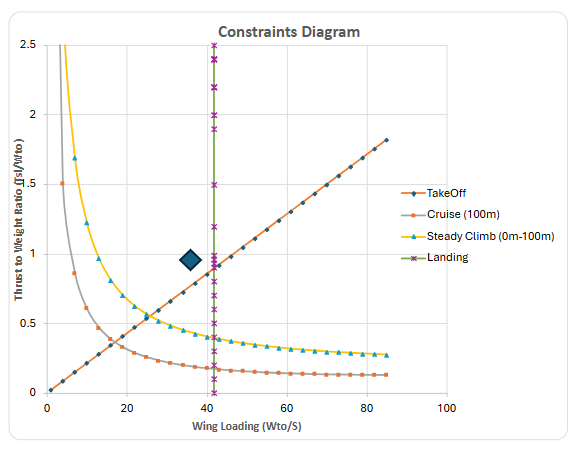
Chosen Thrust to Weight Ratio: W/S ≈ 40, T/W ≈ 1.0, Reynold's Number ≈ 180,000. V,Stall = 7.71m/s
Aircraft was sized using wing loading to calculate wing area. Iterations and Aerodynamic performance calculated using XFLR5.
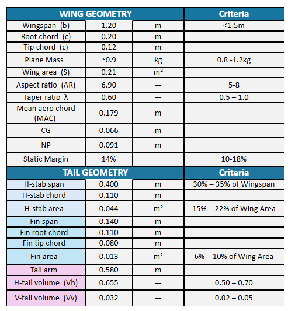
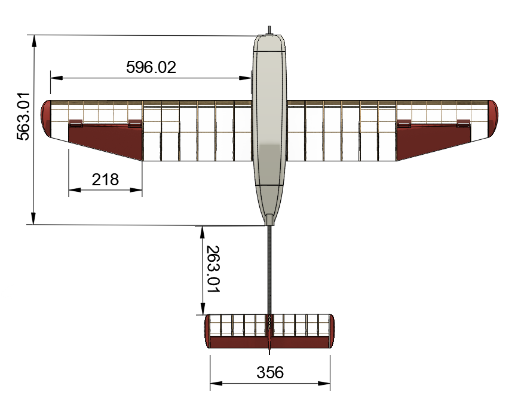
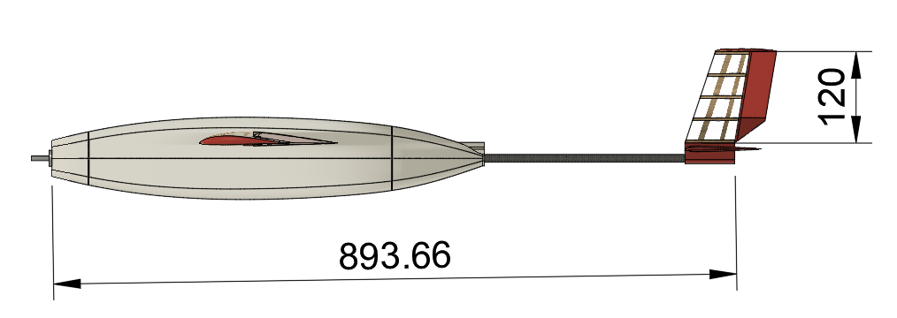
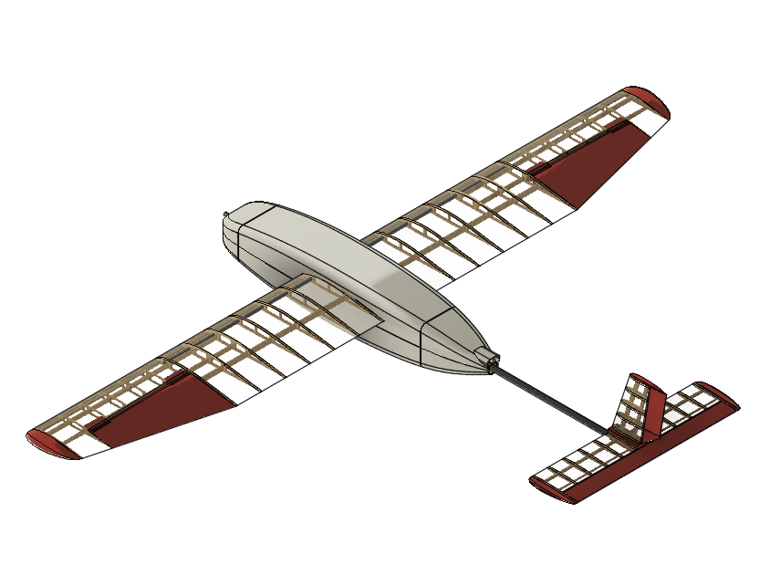
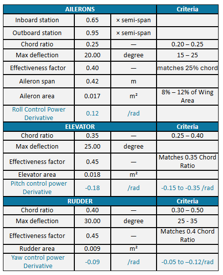
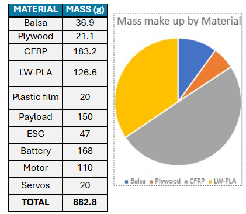
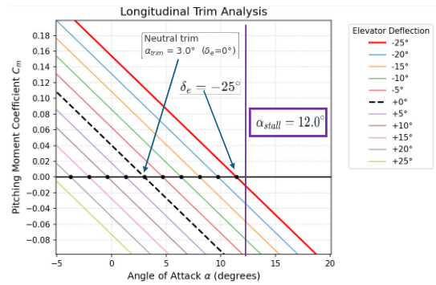
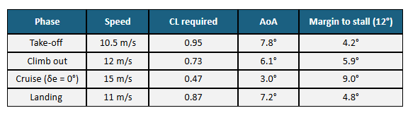
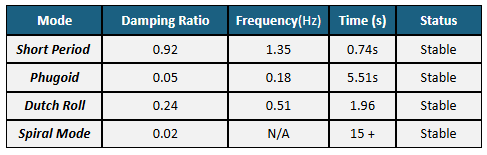
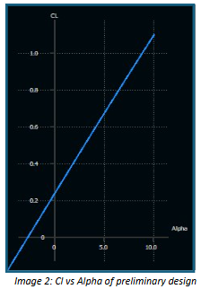
Aerodynamic Stability and Trim Analysis: The longitudinal trim analysis indicates a Neutral Trim at an Angle of Attack of 3.0° with zero elevator deflection. The Pitch Moment Coefficient vs. alpha plot demonstrates a strong negative slope ~ 0.771/rad, confirming that the aircraft possesses inherent longitudinal static stability; any upward pitch disturbance will naturally generate a restoring nose-down moment. With a calculated Aerodynamic Static Margin (SM) of 15.1%, the design strikes an ideal balance between stability and control authority, ensuring the aircraft is not overly sluggish to pilot inputs while remaining robust against center-of-gravity (CG) shifts, where a +/- 5mm shift only alters the SM by +/- 2.8%.
Flight Envelope and Performance Metrics Data exported from XFLR5 reveals a highly efficient lift profile, with a Wing Lift Slope of 5.10 /rad and a stall angle of 12°. During the critical cruise phase at 15 m/s, the UAV maintains a CL of 0.47 at the neutral 3.0° AoA, providing a generous 9.0° margin to stall. Even at the lower speeds required for take-off (10.5 m/s), the aircraft operates safely at an AoA of 7.8°, leaving a 4.2° buffer before flow separation.
Dynamic Stability Verification The dynamic mode analysis confirms that all primary flight modes—Short Period, Phugoid, Dutch Roll, and Spiral Mode—are classified as Stable. Notably: The Short Period mode is heavily damped (Damping Ratio: 0.92), meaning pitch oscillations from gusts will dissipate almost instantly in 0.74s. The Phugoid mode, while showing a lower damping ratio of 0.05, remains stable with a manageable oscillation period, ensuring long-term energy exchange between altitude and airspeed is predictable for the pilot or autonomous controller.
The internal architecture features a modular clip-mounting system for the battery and payload. This allows for real-time shifting of components to adjust the Center of Gravity (CG) and therefore Static Margin, accounting for potential aerodynamic uncertainties. This design choice then allows for different weights of payload while maintaining stable and efficient flight.
With an estimated weight of 900g, the UAV utilises a vacuum-formed 1mm PETG fuselage skin to minimise parasitic drag. Structural loads are carried by dual carbon fiber spars. The wings and tail are constructed from 2mm plywood with a lightweight film wrap, while PLA-lite is used for 3D-printing the aerodynamic cones, winglets, and control surfaces.